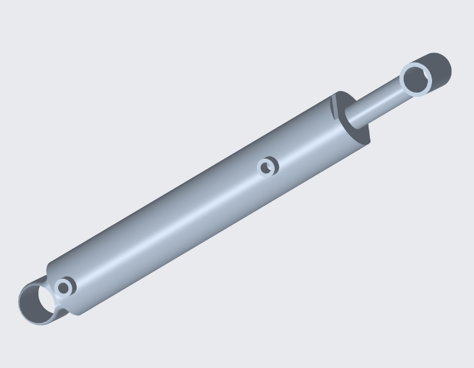
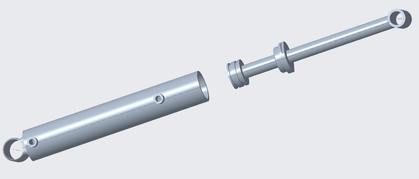
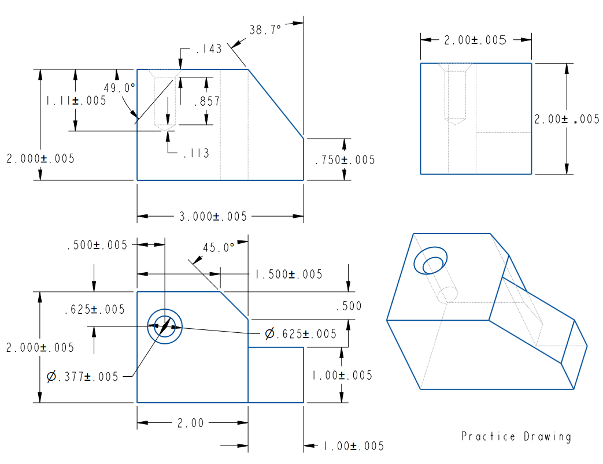
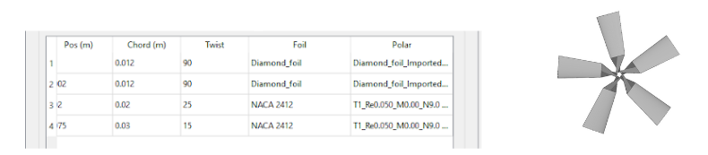
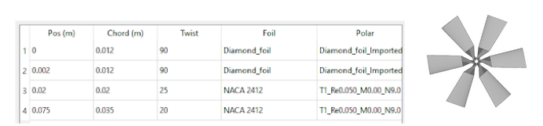
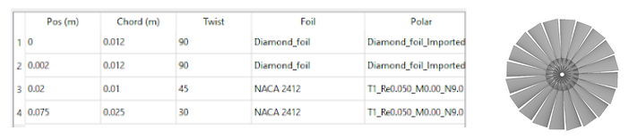
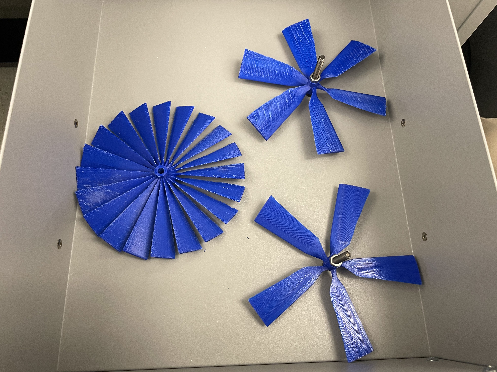
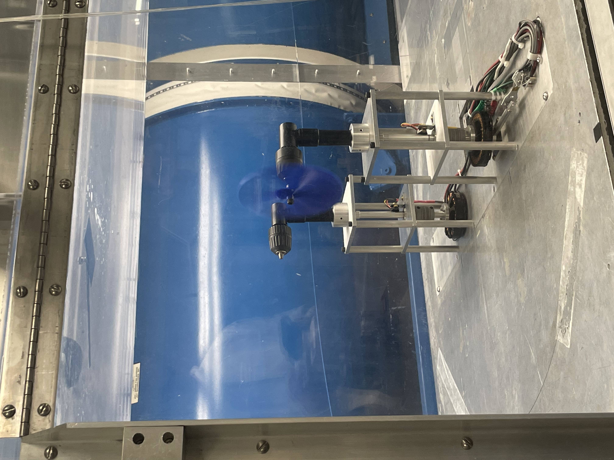

A collection of mechanical design projects from my engineering coursework at Princeton, ranging from individual part drawings to full assembly models.
Lathe Cutting Tool
A detailed CAD model of a lathe cutting tool, created as a technical drawing exercise.

Hydraulic Piston Cylinder
Assembly and exploded-view models of a hydraulic piston-cylinder mechanism.


Object Found at Home — GD&T Drawing
A GD&T (Geometric Dimensioning and Tolerancing) practice drawing of a household object.

Wind Turbine Blade Design
Three blade geometry designs were modeled and 3D-printed for testing in a wind tunnel. The goal was to optimize blade shape for power generation at a given wind speed.




